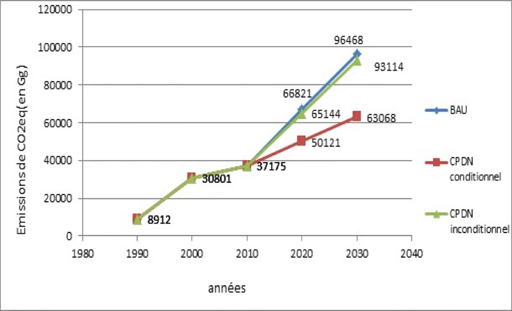
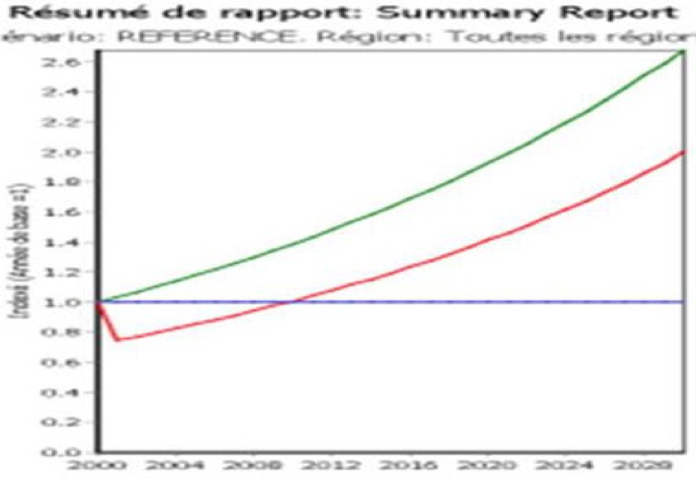

26 Septembre 2015
|
Circonstances nationales |
|
|
Pertes et dommages |
|
|
Objectifs nationaux |
|
|
Émissions pour l’année de référence |
|
|
Couverture et étendue de la contribution |
|
|
Contribution |
|
|
Périodes |
|
|
Réduction des émissions de GES d’ici à 2030 |
|
|
Mesures d’Atténuationdes émissions de GES à l’horizon 2030 |
AFOLU (Agriculture, Forestry and Other Land Uses) :
Energie :
Energie renouvelable :
Efficacité énergétique :
|
|
Procédé de mise en œuvre |
|
|
Hypothèses et méthodologie |
|
|
Mesures d’Adaptation au changement climatique |
|
|
Besoins en financements sur 10 ans, pour la période 2020-2030 |
|
|
Caractère ambitieux et équitable |
|
Le Niger est un pays sahélien dont les trois quarts de sa superficie (1 267 000 km2) sont situés en zone désertique, ce qui le rend tributaire des aléas climatiques avec une pluviométrie à variabilité interannuelle, spatiale et temporelle importante.
Sa population de 17,7 Millions hab. présente un fort taux de croissance démographique (3,9%/an) (RGPH, 2011). Pays fortement enclavé, son PIB était de 6,3 Milliards USD (INS) en 2015, soit 413 USD/hab, avec un IDH de 0,374, le plaçant au dernier rang des pays (PNUD). La production du secteur primaire, dominé par le secteur agro-pastoral avec 37% du PIB et 80% des emplois (INS) varie beaucoup d’une année à l’autre.
Les objectifs de la CPDN du Niger sont d’assurer la sécurité alimentaire, de lutter contre la pauvreté et de contribuer à la réduction des émissions mondiales de gaz à effet de serre (GES) pour ne pas dépasser une augmentation de 2°C à l’horizon 2050, grâce à une croissance verte et une stratégie de développement sobre en carbone, dont la finalité est d’assurer la résilience des populations et des écosystèmes.
Il faut rappeler que le Niger a signé en juin 1992 la Convention Cadre des Nations Unies sur les Changements Climatiques (CCNUCC) et l’a ratifiée le 25 juillet 1995. Il a également signé le Protocole de Kyoto en décembre 1996 et l’a ratifié le 17 mars 2004. Dans le cadre de la mise en œuvre de cette convention, le Niger a élaboré et présenté à différentes COPs, la Communication Nationale Initiale (CNI) et la Seconde Communication Nationale (SCN) sur les changements climatiques. La Troisième Communication Nationale (TCN) est en cours d’élaboration. Dans ces communications, des inventaires de GES ont été réalisés dans cinq secteurs : Utilisation des Terres et Changement d’Affectation des Terres et Foresterie (UTCATF) ; Agriculture/Elevage ; Energie ; Procédés Industriels et solvants ; Gestion des déchets. Depuis plus de trois décennies, le Niger a réalisé d’importants investissements allant dans le sens de la réduction de la vulnérabilité au changement climatique, notamment avec les projets issus de la mise en œuvre de « l’Engagement de Maradi » (1984) pour la lutte contre la désertification. Bien que les résultats de ces inventaires aient montré que le Niger est d’abord un puits de carbone par séquestration des GES, les trois premiers secteurs, qui sont à l’origine des plus grandes sources d’émissions du pays, ont fait l’objet d’études spécifiques d’atténuation.
Comme les autres pays « non Annexe I » de la Convention, le Niger n’a pas d’obligation de présenter des mesures d’atténuation des émissions de GES. Il n’en demeure pas moins qu’étant Partie à la Convention, et conformément aux engagements pris par les Etats Parties à la CCNUCC lors de la COP20 de Lima au Pérou, le Niger s’attache à contribuer à l’effort mondial de réduction des émissions de GES pour que l’augmentation de la température de la Planète ne dépasse pas 2°C à l’horizon 2050.
Dans cette optique, le Niger participe à l’effort global de stabilisation des émissions de GES, en présentant ses ambitions et sa capacité à atténuer ses émissions. Cette capacité dépend pour beaucoup, de l’application des politiques sectorielles et des cadres stratégiques nationaux de développement durable. La priorité du Niger est donc de se focaliser d’abord sur les stratégies d’adaptation et de résilience aux changements climatiques
Pour la CPDN du Niger, les options d’adaptation à considérer en priorité seront celles qui permettront les meilleurs co-bénéfices en matière d’atténuation aux changement climatique, notamment en mettant à l’échelle des huit régions du pays, les bonnes pratiques et techniques d’adaptation qui permettent en même temps la séquestration du carbone et la réduction des émissions de GES. Ces options d’adaptation sont déjà bien définies par les cadres stratégiques existants, tels que le Plan de Développement Economique et Social (PDES 2012-2015 et 2016- 2020), lequel découle de la Stratégie de Développement Durable et de Croissance Inclusive (SDDCI) - Niger 2035, l’Initiative 3N (« les nigériens nourrissent les nigériens »), la Politique Nationale sur les Changements Climatiques (PNCC), le Cadre Stratégique de Gestion Durable des Terres (CS-GDT), la Stratégie Nationale et Plan d’Action en matière de Changement et Variabilité Climatiques (SNPA-CVC).
L’élaboration de la CPDN a comporté les étapes : désignation du point focal de la CPDN; mise en place du Comité Technique de Suivi (CTS) constitués des parties prenantes; mission de cadrage et atelier de lancement ; collecte des données et recherche documentaire ; atelier de renforcement des capacités et de validation des options et résultats d’analyse ; atelier national de validation du projet de la CPDN ; adoption de la CPDN par le Gouvernement du Niger ; présentation de la CPDN à la COP21 de Paris en décembre 2015.
Les Communications Nationales indiquent que les secteurs AFOLU et Energie représentent en moyenne 89% et 9% des émissions totales de GES au Niger. Compte-tenu des potentialités offertes par les ressources du pays, les préoccupations nationales sont focalisées sur les questions liées à l'Adaptation, particulièrement dans le secteur AFOLU (Agriculture/Elevage et Utilisation des Terres), et sur les questions liées à l’Atténuation, principalement dans le secteur AFOLU, puis dans le secteur l’Energie (Transport, Résidentiel et Industries énergétiques).
La stratégie est basée sur la vision d’une agriculture climato-intelligente et sur l’accès aux services énergétiques modernes pour tous en 2030. La recherche de co-bénéfices forts intégrant Atténuation et Adaptation, constitue le socle de la CPDN du Niger. Mais bien que les secteurs AFOLU et Energie soient les domaines prioritaires d’intervention de la CPDN sur le changement climatique au Niger, la mise en œuvre de la CPDN représente de fait un appui transversal à tous les secteurs de l’économie.
La stratégie du Niger est basée sur la vision d’une agriculture climato-intelligente et sur l’accès aux services énergétiques modernes pour tous en 2030. Concernant ce dernier point, le Niger a adopté le Livre Blanc Régional de la CEDEAO qui reconnait que l'accès aux services énergétiques modernes contribue fortement à : améliorer l'accès aux services sociaux de base (santé, éducation, eau potable) ; accroître la productivité des ménages pour la cuisson, l'éclairage, le transport ; impulser la création d'activités économiques génératrices de revenus ; libérer les femmes des corvées de bois, d'eau, de décorticage, etc. ; préserver l'environnement et améliorer la qualité du cadre de vie des populations rurales ; favoriser l'emploi local et la fixation des populations pour atténuer l'exode rural et l'urbanisation incontrôlée.
Le secteur AFOLU se caractérise par une forte expansion des surfaces cultivées, au détriment des formations forestières (steppes arbustives et espaces pastoraux), d’où la nécessité de découpler les évolutions de ces deux types d’occupation des terres, à travers la mise à l’échelle des bonnes pratiques de GDT. Le secteur AFOLU se compose des sous-secteurs suivants :
La perte de 100 000 ha de déforestation par an est due aux défrichements agricoles et à l’exploitation du bois de service, utilisé principalement comme combustible par les ménages. Les steppes arbustives (zones pastorales) disparaissent au profit de l’agriculture, avec environ 4 millions d’ha d’espaces pastoraux perdus entre 1975 et 2013. D’où la nécessité d’avoir une approche basée sur l’agriculture intelligente face au climat (AIC). La figure ci-dessous présente l’évolution en km² des superficies agricoles et des steppes arbustives au Niger de 1975 à 2013 (CILSS/USGS, 2015).
Le sous-secteur de l’agriculture comprend les activités agricoles et pastorales et ses émissions de GES proviennent de la fermentation entérique (60%), la gestion du fumier (39%), le brûlage des résidus sur site, les sols agricoles, la riziculture (1%).
Le potentiel en terres agricoles représente 13% du pays, dans lequel les terres cultivées représentent 40%. La faiblesse de fertilisation, la réduction des jachères et l’extension des terres de culture favorisent la dégradation des terres par le développement de l’érosion hydrique et éolienne et ne permettent plus d’assurer le maintien de la biomasse du sol
Le potentiel irrigable de 330 000 ha (I3N 2012-2015), localisé essentiellement dans la vallée du fleuve Niger et quelques vallées adjacentes, n’est mis en valeur qu’à hauteur de 30%. Vu les besoins en riz du pays, qui, à long terme, seront élevés du fait de l’accroissement de la population, conduire une politique d’accroissement des superficies en riz est nécessaire.
Le potentiel de l’élevage est important (37 Millions de têtes en 2008, SDE, 2013-2035), grâce à un vaste espace pastoral, exploitable par la transhumance et l’exploitation d’importantes ressources hydrologiques, non souterraines. L’attachement de la population à la pratique de l’élevage est encouragé par la présence du marché du Nigéria d’au moins 170 Millions de consommateurs, avec lequel le Niger partage 1 500 kilomètres de frontière.
Le Rapport National d’Inventaire de GES de 2000 répartit les émissions de GES du secteur Energie avec : 41% pour le transport, 37% pour le résidentiel, 15% pour les unités productrices d’énergie, 5% pour les industries manufacturières. Les autres sous-secteurs (commerce et institutionnel, agriculture-pêche-pisciculture, mines) totalisent moins de 3%. La consommation énergétique nationale va tripler d’ici 2030, notamment du fait de la forte croissance des sous- secteurs résidentiel, transport, industriel et minier.
Avec l’année de base 2000 (SCN) et une période de mise en œuvre de la CPDN allant de 2015 à 2030 (CS-GDT), la figure ci-dessous présente les émissions tendancielles de GES pour le Niger, entre 1990 et 2030.

Les émissions de l’année de base sont de 30.801 GgCO2eq., réparties en UTCAFT : 55,6% ; agriculture : 34,6% ; énergie : 8,5% ; déchets : 1,2% ; procédés industriels : 0,06%.
Le BAU 2000 et 2030 a été construit à partir des émissions des trois Communications Nationales : CNI, 1990 : 9.000 GgCO2Eq. ; SCN, 2000 : 30.801 GgCO2Eq. ; TCN, 2008 : 35 900 GgCO2Eq. ; BAU, 2020 : 66 821 GgCO2Eq. ; BAU, 2030 : 96 468 GgCO2Eq.
La mise à l’échelle des bonnes pratiques de GDT sont à la fois, des mesures d’adaptation au changement climatique et d’atténuation des émissions de GES. Leur mise en œuvre font l’objet de projets en cours ou planifiés, est accompagnée par la recherche pour l’amélioration de la productivité agro-sylvo-pastorale. Elles sont retenues pour la CPDN : restauration des terres agro- sylvo-pastorales : 1 030 000 ha ; régénération naturelle assistée (RNA) : 1 100 000 ha ; fixation des dunes : 550 000 ha ; aménagement des forêts naturelles : 2 220 000 ha ; haies-vives : 145 000 km ; plantations d’espèces à usages multiples : 750 000 ha ; plantations de Moringa oleifera : 125 000 ha ; ensemencement des parcours : 304 500 ha ; foresterie privée : 75 000 ha. La simulation de la mise à l’échelle des bonnes pratiques de GDT affiche un coût total de 1,27 Milliard USD. Le cadre stratégique de gestion durable des terres (CS-GDT 2015-2029) montre une mobilisation des financements à hauteur de 10% des coûts de la mise à l’échelle, soit 107,6 Millions USD à 2029, à travers le budget inconditionnel de l’Etat et les partenaires financiers. La GDT conditionnelle se chiffre à 968,06 Millions USD.
Les options d’atténuation inconditionnelles dans le secteur de l’énergie concernent : la gestion du sous-secteur ‘Résidentiel’, par l’électrification rurale, l’économie du bois-énergie et sa substitution ; la gestion des sous-secteurs «Transport » et « Résidentiel » : électrification rurale, économie du bois-énergie et baisse des consommations spécifiques dans le transport ; la gestion des secteurs «Demande, Transformation et Vulgarisation des Energies Renouvelables » : amélioration de l’efficacité énergétique des filières et promotion du solaire photovoltaïque pour le pompage et l’électrification.
Les options technologiques conditionnelles du secteur «Energie », dans une vision à moyen et long termes, concernent : l’exploitation de l’énergie solaire photovoltaïque et thermique, l’exploitation de l’énergie éolienne ;; la construction d’une centrale nucléaire et d’une centrale à gaz ; l’hydroélectricité; l’économie du bois pour la cuisson; l’efficacité énergétique; l’utilisation du biogaz ; la construction des bâtiments sans coffrage. L’impact des scénarios d’électricité sur la réduction de GES a été évalué selon le rapport AIEA1. L’émission de CO2 par habitant connaîtra une croissance plus importante pour les scénarios d’électricité pour tous et pour le scénario sans action (sans réduction de GES). Ceci s’explique par l’utilisation plus importante du charbon minéral dans la production de l’électricité, au niveau de ces deux scénarios. Le Plan d'Action National de l’Energie Durable pour Tous (SE4ALL) est chiffré à l’horizon 2030 à hauteur de 6 Milliards USD. Le financement inconditionnel mobilisé représente 12% (720,6 Millions USD), et le financement conditionnel se chiffre à 5,28 Milliards USD soit 88%.
Le potentiel d’atténuation du secteur de l’Energie est de 700 GgCO2Eq, soit 0,7% du total des émissions nationales. Il est observé une diminution de cette émission pour le scénario électricité pour tous, à partir de 2025, ce qui s’explique par la croissance de la production à partir du gaz et par l’entrée de la production à partir du nucléaire dans le système, comme le montre la figure ci- dessous (Émissions du CO2 par habitant selon les trois scénarii).

(Source : PANEDT/AIEA, 2014).
La contribution du Niger est basée sur un mix résultats-actions. La réduction d’émissions des deux secteurs prioritaires AFOLU et Energie, est estimée à 33.400 GgCO2Eq., soit 34,7% par rapport au BAU à 2030. Selon la figure-3 ci-dessous :

Le coût global de la CPDN conditionnelle est de 6,25 Milliards USD, soit 87%, et le coût global de la CPDN inconditionnelle est de 827 Millions USD, soit 13%, comme le résume le tableau ci- dessous (synthèse des réductions d’émissions de GES et coûts à 2020-2030).
|
Réduction GES par rapport au BAU 2020 |
Réduction GES par rapport au BAU 2030 |
Coûts / BAU 2030 en Milliards USD |
|
|
CPDN Conditionnel |
25% |
34,6% |
6,25 |
|
CPDN Inconditionnel |
2,5% |
3,5% |
0,83 |
Les émissions de GES du Niger de 30.801 GgCO2Eq. représentent 2,8t/hab. et seulement 0,061% des émissions mondiales de CO2. N’appartient pas à l’Annexe I de la CCNUCC, le Niger n’a pas d’obligation chiffrée en termes d’atténuation. Cependant, malgré ses besoins importants pour développer son économie et la nécessité de sortir une grande partie de sa population de la pauvreté, l’ambition du Niger est de limiter ses émissions à 2,1 t CO2Eq/hab. à l’horizon 2030, dans le cadre de l’objectif conditionnel. Pour cela, le Niger souhaite un prix du carbone à la hauteur des enjeux internationaux (50 USD/t), ce qui lui faciliterait la double approche « résultats et actions » et optimiserait sa contribution à l’échelle mondiale.
Les bilans des émissions de GES contenus dans les trois Communications Nationales ont été utilisés pour établir les tendances des émissions de gaz à effet de serre au Niger, de 1990 à 2030.
Dans le secteur AFOLU, le logiciel EX ACT a été utilisé pour simuler le carbone stocké dans les projets, entre deux dates. Dans le secteur Energie, le modèle LEAP a été utilisé, comme le montre la figure ci-dessous (projection de la demande totale en énergie à l’horizon 2029).

Dans le cadre de l’étude sur « l'évaluation de la demande et de l'offre énergétiques du Niger pour la période 2010-2035 » (Ministère de l'Energie et du Pétrole /Direction Générale de l'Energie : décembre 2013), les modèles de l’AIEA : MAED et MESSAGE ont été utilisés.
Le Niger n'est pas un pays qui représente une source d'émissions de GES, mais au contraire un puits d'absorption net. De plus, situé en bordure des zones arides du Sahara, le Niger subit de plein fouet, les conséquences du changement climatique. Compte-tenu des potentialités offertes par les ressources du pays, les préoccupations nationales vont d’abord aux questions liées à l'adaptation (avec ses co-bénéfices atténuation) dans le secteur prioritaire AFOLU, puis au secteur prioritaire de l’Energie (Transport, Résidentiel et Industries énergétiques). Les autres domaines importants pour le pays, sont ceux relatifs au transfert de technologies et au renforcement des capacités.
Diverses études menées dans le cadre des Communications Nationales sur le changement climatique au Niger mentionnent : l’accroissement de la variabilité des précipitations aussi bien dans l’espace que dans le temps ; une tendance à la hausse des températures, notamment à partir de 1996 ;; l’accroissement de la fréquence et de l’intensité des risques climatiques extrêmes (sécheresses, inondations, vents violents, tempêtes de sable et de poussières, ennemis des cultures) ; l’ensablement des cours d’eau (Vallée du Fleuve Niger, Lac Tchad) et des cuvettes oasiennes ; les pertes en cas de sécheresse estimées à plus de 70 Millions USD au Niger (World Bank, Climate risk assessment, Niger, 2012); les dommages dont les coûts occasionnés par les inondations des années 2000 sur les secteurs clés de l’économie ont été estimés à 18 Millions USD (DPCS ; OCHA 2009).
Les priorités nationales relatives au secteur AFOLU portent sur l’amélioration de la résilience des sous-secteurs de l’agriculture, de l’élevage et de la foresterie. Les priorités autres portent sur les ressources en eau, la pêche, la faune, la santé, le renforcement des capacités des acteurs à tous les niveaux. S’adapter au changement climatique constitue un défi pour le pays. Pour y parvenir, les techniques d’adaptation appropriées pour le Niger, portent notamment sur la gestion durable des terres (CS-GDT 2014), les énergies renouvelables et l’efficacité énergétique. Du fait de sa pertinence et de son aboutissement, le CS-GDT constitue le document choisi comme référence pour la CPDN.
Des projets focalisés sur l’adaptation au changement climatique au Niger sont déjà en cours de réalisation, tels que :
Les consultations avec les parties prenantes ont souligné la nécessité pour la CPDN de rechercher les complémentarités avec les processus existants, en évitant que son contenu ne remplace, duplique ou affaiblisse les processus nationaux de réponse déjà en cours sur le changement climatique, tels le PNA et le NAMA qui sont les processus nationaux de référence pour l’adaptation et l’atténuation. Ainsi, pour être complémentaire avec les processus existants, la CPDN vise des mesures spécifiques et s’attache à faciliter leur application. Dans le secteur prioritaire AFOLU, la mise en œuvre de la CPDN proposée porte sur l’application de l’ensemble des techniques issues du CS-GDT sur la période 2015-2030. Le tableau de l’Annexe 2 liste les techniques issues du CS- GDT et les objectifs de superficies à réaliser pour sa mise en œuvre dans la CPDN. Ainsi, le coût de la mise à l’échelle de CS-GDT est estimé à 1,27 Milliard USD (conditionnel), sachant qu’il a déjà mobilisé 0,337 Milliard USD (inconditionnel), soit un coût global de l’adaptation de 1,607 Milliards USD. L’atténuation dans le secteur de l’énergie, nécessite des investissements beaucoup plus lourds, pour permettre l’accès à l’énergie propre, durable et bon marché. Cependant, dans le Plan National d’Adaptation et dans la vision à 2050 de la CPDN, le Niger devrait intégrer tout ou partie du volet infrastructures (routes, ponts, digues, ouvrages de mobilisation et de valorisation des eaux, ouvrages et réseaux d’assainissement des eaux usées et des déchets solides).
Les co-bénéfices du secteur AFOLU sont constitués par les résultats de mise en œuvre et de mise à l’échelle des activités d’AIC : Renforcement du potentiel productif par les bonnes pratiques de RNA et de récupération des terres dégradées ; amélioration du bilan céréalier et fourrager, ainsi que de la sécurité alimentaire et nutritionnelle ; développement de l’information agro-climatique locale ; création d’emplois et réduction de l’exode rural ; renforcement de la cohésion sociale. Les bénéfices et coûts annuels prévisionnels de mise en œuvre et de la mise à l’échelle des techniques préconisées dans le CS-GDT et retenue pour le secteur AFOLU dans la CPDN du Niger, sont présentés dans le tableau de l’Annexe 3 et le coût de mise en œuvre de la CS-GDT sur les dix premières années (2016-2030), est estimé à 127 393 000 USD. Les co-bénéfices du secteur Energie portent sur : l’amélioration du cadre de vie des populations, via l’augmentation des revenus par la protection sociale, l’accès à l’eau potable, l’éducation et la santé, ainsi que l’accès aux NTIC et les équipements énergétiques ; le développement de l’entreprenariat local ; l’allégement des tâches domestiques des femmes ; la diminution de l’exode rural par la création d’emplois.
Les techniques d’AIC répondent aux objectifs de la CPDN (adaptation, atténuation, sécurité alimentaire), tout en renforçant le développement à la base. Elle prend en compte l’information climatique, l’alerte précoce, la gestion des risques et catastrophes, l’assurance indicielle agricole climatique. L’intégration du changement climatique dans la planification locale (PDC), régionale et nationale (secteurs santé et élevage) sont des bonnes pratiques testées et approuvées au Niger et donc, prises en considération dans la CPDN. Les avantages procurés par les mesures d’AIC devraient a priori satisfaire tous les acteurs impliqués dans les réponses au changement climatique : d’une part, les populations du Niger et leur gouvernement, qui mettent ainsi la priorité sur l’adaptation au changement climatique et la sécurité alimentaire ; d’autre part, la communauté internationale, qui constate que l’atténuation du changement climatique est effectivement prise en compte dans les mesures d’adaptation. De plus, elles peuvent être mise en place dès maintenant et donc permettent de prioriser l’action, parce que leur phase d’expérimentation technique est achevée dans les différentes régions agro-écologiques du pays (il reste en fait à les mettre à l’échelle) et parce que leurs impacts et leurs coûts-bénéfices ont été évalués et ont montré leur pertinence socio-économique et leur rentabilité. La mise en avant de ces objectifs et résultats, clairement affichés dans la CPDN du Niger, devrait permettre l’adhésion des partenaires techniques et financiers pour appuyer cette vision intégrée de l’adaptation et de l’atténuation. Cela permettrait de susciter leur soutien technique et financier dans la mise en œuvre de ces réponses, qui sont à la fois opérationnelles et aptes à arrimer au développement national, les bonnes options sur le changement climatique.
Le processus de mise en œuvre de la CPDN est une opportunité pour renforcer les capacités institutionnelles et techniques, favoriser l’intégration politique et promouvoir un développement inclusif. Les institutions nationales nécessaires à la mise en place des programmes issus de la CPDN existent : il s’agit du MESUDD, actuellement structure porteuse de l’élaboration de la CPDN, en collaboration avec le Secrétariat exécutif du CNEDD, point focal de la Convention. Cependant, des alternatives peuvent être envisagées : ancrage institutionnel de la CPDN au MESUDD, avec des points focaux au niveau des institutions concernées ; mise en place d’une agence d’exécution nationale avec autonomie de gestion ; haute Autorité à la CPDN... Une analyse institutionnelle devra être envisagée pour évaluer ces options.
Pour obtenir les financements nécessaires, une option serait de solliciter l’aide internationale des bailleurs de fonds (option conditionnelle) ;; l’autre option serait d’attirer les financements du secteur privé pour la mise en œuvre du CS-GDT. A cet effet les communautés ont la possibilité de vendre les services d’atténuation sur le marché du carbone. Les problèmes potentiels avec cette option sont la difficulté d’accéder à ce marché et le faible niveau des prix actuels de crédits de carbone. Même si les financements sont acquis de manière conditionnelle et inconditionnelle, des mesures d’accompagnement seront indispensables pour l’utilisation efficiente des crédits alloués.
Un autre obstacle majeur de la mise en œuvre de la CPDN est la forte croissance démographique du pays. Actuellement, ce taux est de 3,9% par an, mais le gouvernement s’est engagé à réduire ce taux à 2,5% à l’horizon 2035 (SDDCI 2012-2035).
L’analphabétisme des populations rurales représente un réel frein à la diffusion des techniques d’AIC et de GDT pour leur mise à l’échelle. La scolarisation et l’alphabétisation effective des populations en milieu rural, accompagnées par un système de vulgarisation, est de toute façon nécessaire pour permettre la compréhension de la mise en œuvre des techniques préconisées par la CPDN.
La faiblesse de la qualification des ressources humaines, l’insuffisance des moyens logistiques et les conflits institutionnels pour encadrer la mise à l’échelle des bonnes pratiques nécessitent un renforcement de l’encadrement en milieu rural, notamment dans le secteur AFOLU. Il est également nécessaire de sécuriser le foncier agricole et pastoral et de disposer d’opérateurs de terrain compétents pour améliorer la capacité d’absorption.
La mise en œuvre de ces mesures nécessite une amélioration de la coordination entre les institutions, une synergie entre politiques et stratégies et une bonne répartition des compétences, lorsqu’il s’agit des actions transversales.
L’objectif de développement durable auquel contribue la CPDN, ne saurait se réaliser sans le transfert des technologies appropriées, le financement et le renforcement des capacités, en tenant compte des priorités nationales de développement économique et social définies par les différents cadres stratégiques.
L’atteinte de l’objectif de la CPDN du Niger nécessite un investissement global estimé à 8,667 Milliards USD, dont 7,50 Milliards USD (87% du financement global), conditionnés par l’accès à de nouvelles sources de financement (Fonds Vert pour le Climat et autres mécanismes de la finance climat). Le financement inconditionnel, provenant des ressources propres de l’Etat et de l’aide publique au développement, est estimé à 1,167 Milliard USD, soit 13% du coût global.
Pour la mise en œuvre de la CPDN, le Niger mettra l’accent sur les besoins en transfert de connaissance et de technologie dans les secteurs prioritaires AFOLU et Energie. Ces besoins se rapportent essentiellement à la mise à l’échelle des bonnes pratiques d’AIC, aux technologies des énergies renouvelables, à l’efficacité énergétique, ainsi qu’aux autres domaines de gestion, telle que la GIRE, la gestion des déchets urbains, de la faune, de la pêche, de la protection sociale et de la santé, etc.
Le renforcement des capacités concerne : le montage de projets bancables et la maîtrise des règles et procédures des bailleurs de fonds ; l’évaluation des projets d’adaptation en termes d’analyse économique et financière;; la mise en place de système MNV ; la connaissance et la compréhension du processus de mise en œuvre de la CPDN ; l’Evaluation Environnementale et Sociale Stratégique (EESS) et de projet (EIES) ; l’Aménagement du territoire ; les bonnes pratiques pour la gestion-séquestration du carbone ; la filière carbonisation du charbon minéral à des fins domestiques ; la cartographie des sols ; l’élaboration d’un plan national forestier ; la gestion rationnelle des déchets liquides et solides… Ces actions devraient concerner, en priorité, les parties prenantes du processus de mise en œuvre de la CPDN au Niger : agents concernés par la mise en œuvre de la CPDN ; acteurs économiques, en priorité les exploitants ruraux, les Organisations Producteur (OP : agriculture, élevage, etc.) et tout investisseur relatif à la CPDN ayant déjà une planification avancée de son projet ; représentants de la société civile et ONGs. Si les investissements de la CPDN représentent environ 83% de son montant global, on peut estimer 17% le coût du fonctionnement (notamment suivi-évaluation), dont 10% à affecter au transfert des technologies et au renforcement des capacités.
Le montage institutionnel de mise en œuvre de la CPDN comporte les aspects suivants : un système de «suivi-évaluation Pays» prenant en compte le genre, les procédures MNV et un registre des projets de la CPDN.
Le dispositif de suivi-évaluation et de capitalisation de la CPDN sera mis en place, reposera sur : le suivi-évaluation du processus portant sur les modalités de mise en œuvre et qui examinera les aspects de coordination intersectorielle, de processus décisionnel etc. le suivi-évaluation des effets et impacts de la CPDN basé sur des critères et indicateurs pertinents et la définition de mesures correctives de sauvegarde climatique, environnementale, économique et sociale ; le suivi des risques et de l’évolution de la vulnérabilité aux changements climatiques au niveau national ; et la capitalisation des expériences et leçons.
AFD: Agence Française de Développement
AFOLU: Agriculture, Forestry and Other Land Uses
AIC: Agriculture Intelligente face au Climat
AIEA: Agence Internationale de l’Énergie Atomique
BAU: Business As Usual (cours normal des affaires sans CPDN)
CC: Changement Climatique
CCNUCC: Convention Cadre des Nations Unies sur les CC
CEDEAO: Communauté Economique Des Etats d’Afrique de l’Ouest
CILSS: Comité Inter-Etats de Lutte contre la Sécheresse au Sahel
CNEDD: Conseil National de l’Environnement pour un Développement Durable
CNI: Communication Nationale Initiale
CO2: Dioxyde de Carbone ou Gaz Carbonique
COP: Conférence des Parties
CPDN (INDC): Contributions Prévues Déterminées au niveau National
CS-GDT: Cadre Stratégique de Gestion Durable des Terres
CTN-CVC: Commission Technique Nat. sur les Chang. et la Variabilité Clim. CTS Comité Technique de Suivi
EESS: Evaluation Environnementale et Sociale Stratégique
EIES: Etudes d’Impact Environnemental et Social
Ex-ACT: Ex-Ante Carbon-balanceTool (logiciel)
FVC (GCF): Fonds Vert pour le Climat (Green Climate Fund)
GDT: Gestion Durable des Terres
GES: Gaz à Effet de Serre
Gg éqCO2: Giga-grammes équivalent Gaz Carbonique
I3N: Initiative « Les Nigériens Nourrissent les Nigériens »
INS: Institut National des Statistiques
LEAP: Long-range Energy Alternatives Planning system (logiciel)
MAED: Modèle d'Analyse de la Demande Energétique
MDP: Mécanisme de Développement Propre
MESSAGE: Modèle pour l’Analyse des Systèmes d’Approvisionnement en Énergie
MESUDD: Ministère de l'Envir., de la Salubrité Urbaine et du Dév. Durable
MNV: Mesure, Notification, Vérification (MDP, REDD,…)
NAMA: Nationally Appropriate Mitigation Actions
PNA: Programme National d’Adaptation
PASADEM: Projet d’Appui à la Sécurité Alimentaire pour le dévelop. de Maradi
PDC: Plan de Développement Communal
PDES: Programme de Développement Economique et Social
PIB: Produit Intérieur Brut
PMA: Pays les Moins Avancés
PNCC: Politique Nationale sur les Changements Climatiques
PNUD: Programme des Nations Unies pour le Développement
PTF: Partenaire Technique et Financier
RGPH: Recensement Général de la Population et de l’Habitat
RNA: Régénération Naturelle Assistée
SCN: Seconde Communication Nationale
SDE: Schéma de Développement de l’Elevage
SDDCI: Stratégie de Développement Durable et de Croissance Inclusive
SNPA/CVC Strat. Nat. et le Plan d’Action en matière de Chang. et Variabilité Clim.
TARAM: Tool for Afforestation and Reforestation Approved Methodologies
TCN: Troisième Communication Nationale
UTCATF: Utilisation des Terres, Chang. d’Affectation des Terres et Foresterie
|
Techniques |
Superficies (en.000 ha) |
Premier bénéfice quantifié |
Deuxième bénéfice quantifié |
Coûts (en .000 $) |
|
Restauration des terres agricoles |
1 030 |
Gains de cultures |
Gains en pailles |
309 000 |
|
Régénération naturelle assistée |
1 100 |
Gains de cultures |
Gains en pailles |
33 000 |
|
Fixation des dunes |
550 |
Gains de cultures |
Gains en pailles |
220 000 |
|
Aménagement des forêts naturelles |
2 220 |
Bois de service |
- |
222 000 |
|
Plantations de haies-vives (145 000 km) |
29 |
Gains de cultures |
Gains en bois de service |
46 980 |
|
Plantations de gommiers / doumiers |
750 |
Gomme et feuilles |
Gains en bois de service |
300 000 |
|
Plantations de Moringa oleifera |
125 |
Feuilles |
- |
37 500 |
|
Ensemencement herbacé |
304,5 |
Pailles et fourrage |
- |
30 450 |
|
Foresterie privée |
750 |
Bois de service |
- |
75 000 |
|
TOTAL |
6 858 |
1 273 930 |
Source : Atelier de renforcement des capacités des acteurs CPDN 2015.
Le coût annuel de la mise en œuvre de la CS-GDT sur les dix premières années (2016- 2030), est estimé à 127 393 000 USD, comme indiqué dans le tableau ci-dessous (Calendrier et budget proposés pour les mesures d’Adaptation de la CPDN du Niger, en superficies et coûts par an, pour les dix premières années).
|
Techniques du CS-GDT |
Surfaces annuelles prévues sur 2016-2030 (en ha/an) |
Budget annuel sur 2016- 2030 (en US$) |
|
1. Restauration des terres agricoles |
68 667 |
30 900 000 $ |
|
2. Régénération naturelle assistée |
73 333 |
3 300 000$ |
|
3. Fixation des dunes |
36 666 |
22 000 000$ |
|
4. Aménagement des forêts naturelles |
148 000 |
22 200 000$ |
|
5. Haies-vives |
9 667 |
4 698 000 $ |
|
6. Plantations gommiers / doumiers |
50 000 |
30 000 000$ |
|
7. Plantations de Moringa oleifera |
8 333 |
3 750 000$ |
|
8. Ensemencement des herbacées |
20 300 |
3 045 000$ |
|
9. Foresterie privée |
50 000 |
7 500 000 $ |
|
TOTAL |
127 393 000$ |
Source : Atelier de renforcement des capacités des acteurs CPDN 2015.
1. Etude d’évaluation de l’offre et de la demande en électricité de 2010 à 2035 pour le Niger, 2014.↩